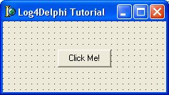
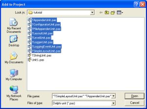

Log4Delphi Tutorial
About This Tutorial
This tutorial provides a step by step guide to using Log4Delphi. It does not attempt to explain or provide an in depth discussion on any details. If you want more detail check the User Guide.
Step 1: Obtaining a Source Distribution
1.1 Download the Source Distribution
Download a source distribution of Log4Delphi log4delphi-version.archive from here. I used log4delphi-0.4-src.tar.gz for this tutorial.
1.2 Extract The Archive
Extract the archive using the tool of your choice to the location of your choice. I used Zipgenius to extract it to my F:\ drive. This resulted in a folder named F:\log4delphi-0.4
Step 2: Creating a New Project
2.1 Launch Delphi And Save Project
- Create a folder named tutorial in the location of your choice. I used my F:\ drive again.
- Launch Delphi and save the project in the tutorial folder you created.
- Now add a button to the form and label its caption "Click Me!".
 - Copy all the Pascal source files from the log4delphi-version/src/delphi folder, including the util folder and its contents into the tutorial folder, excluding the TConsoleUnit.pas file.
- Now add the source files to your project by selecting Project > Add To Project from the main menu in Delphi.
- Select the source files and click the Open button.
 - Now copy the file named log4delphi.properties in the log4delphi/example folder to your tutorial folder.
Step 3: Perfromming Logging
- Select Project > View Source from the main menu in Delphi.
- Add the line TConfiguratorUnit.doPropertiesConfiguration('log4delphi.properties'); beneath the line that reads Application.Initialize;.
- Now add an onClick event handler to the button. In the handler add the line TLogger.getInstance.debug('Button Clicked!');.
- Finally add an onDestroy handler to the main form. Add the following code to the handler: TLogger.freeInstances;.
Step 4: Evaluating The Log File
- Compile and run the application. Click the button three times and then exit the application.
- You should have a log file in the tutorial folder named app.log with the following content
DEBUG - Button Clicked
DEBUG - Button Clicked
DEBUG - Button Clicked
Source Code
unit Unit1;
interface
uses
Windows, Messages, SysUtils, Variants, Classes, Graphics, Controls, Forms,
Dialogs, StdCtrls;
type
TForm1 = class(TForm)
Button1: TButton;
procedure Button1Click(Sender: TObject);
procedure FormDestroy(Sender: TObject);
private
{ Private declarations }
public
{ Public declarations }
end;
var
Form1: TForm1;
implementation
uses
TLoggerUnit;
{$R *.dfm}
procedure TForm1.Button1Click(Sender: TObject);
begin
TLogger.getInstance.debug('Button Clicked!');
end;
procedure TForm1.FormDestroy(Sender: TObject);
begin
TLogger.freeInstances;
end;
end.